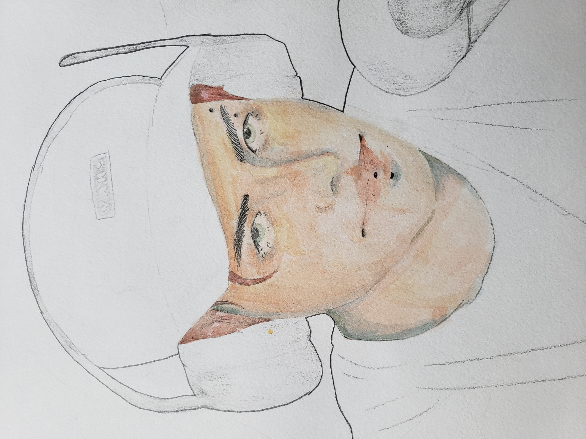

My Hobbies/Interests
Drawing/Painting
I enjoy making art of any kind, but in particular I enjoy drawing and painting. The main subjects of my art are people. I enjoy drawing people and creating characters. The main supplies/ medias that I use include pencil/graphite drawings, watercolor paints, and ink. I have been creating art since the age of 6 years old and I have grown to enjoy it more and more.
My most recent sketch:

My most recent finished painting:

My most recent project (unfinished):
